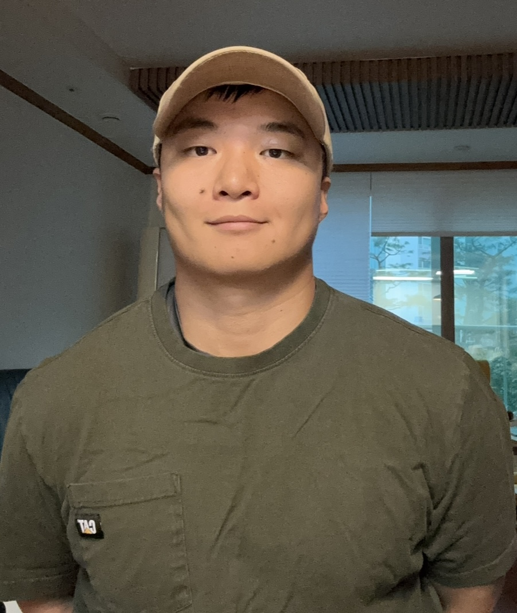

Jaehyeok Choi

About
I am a Ph.D. student in Computer Science at Iowa State University. My research interests are in formal methods, theoretical computer science, and symbolic methods for verification.
My current research focuses on binary decision diagrams and their applications to formal verification.
Google ScholarOrcid
Research
My research interests include:
- Formal verification
- Binary decision diagrams
- Symbolic model checking
- Boolean functions
- Data structures for verification
Publication
J. Choi and A. S. Miner, " Binary Decision Diagrams Unchained ," Proc. 26th Conf. Formal Methods in Computer-Aided Design (FMCAD 2026), p. 439, 2026.
Contact
Email: jaehyeok AT iastate DOT edu